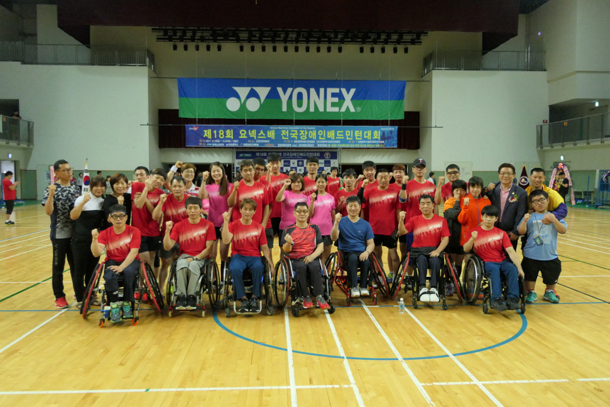

사회공헌
요넥스코리아의 다양한 사회 공헌활동을 지속하겠습니다.
-
원천배 초등학교 배드민턴 선수권 대회 및 국제 주니어 대회 후원
일평생 배드민턴 발전에 남다른 열정을 가졌던 (주)동승통상 故김덕인 회장님의 아호를 따서 이름 붙여진 '원천배 초등학교 배드민턴 선수권대회'는 기업의 이윤을 사회에 환원하고 우수선수들을 조기에 발굴, 육성한다는 故 김덕인 회장님의 경영철학에 따라 창설되었습니다.
1994년 첫 대회가 열렸으며 2016년 21회까지 이어지는 동안 전국의 우수선수들은 물론 멀리 일본, 대만, 필리핀, 싱가폴 등 해외 선수들까지 참가하는 국제대회로 위상을 더했습니다.
원천배 초등학교 대회는 참가선수들이 선의의 경쟁 속에 서로 우의를 다지며 성적에 얽매이지 않고 정정당당히 경쟁하는 스포츠맨십의 참뜻을 심어주어 미래의 대한민국 배드민턴을 이끌어 갈 꿈나무들에게 꿈과 희망을 주는 대회로 발전했습니다.
주니어 선수들이 국내를 넘어 보다 넓은 무대에서 국제 경쟁력을 강화할 수 있도록 2012년 아시아주니어 선수권 대회 후원을 시작으로 2013년부터는 코리아주니어오픈국제배드민턴대회 후원을 이어오고 있습니다. 특히 코리아주니어오픈국제배드민턴대회는 2017년부터 유망주 성장과 발굴에 중요함을 강조하고 관심을 가졌던 故 김덕인 회장의 뜻을 같이 하기 위해 아호인 원천(原川)을 대회명으로 하여 '원천배 초등학교 배드민턴대회'와 통합, 명실상부한 최고 권위의 주니어대회로 성장하고 있습니다.
-
장애인 배드민턴 대회 지원
장애인 배드민턴대회를 매년 적극적으로 지원하여 생활체육의 취약 계층인 장애인들이 배드민턴을 통해 서로 교류하고 동기부여하는 자발적인 사회참여를 유도하고 있습니다.
지속적이고 꾸준한 대회지원을 통해 장애인과 비장애인이 서로를 이해하고 편견을 허무는 데 기여하고 있습니다.
요넥스코리아는 이처럼 다양한 이점을 가진 생활체육으로서의 배드민턴을 장애인이 더욱 쉽게 즐길 수 있도록 끊임없이 노력 할 것입니다.
 -
다문화가족 배드민턴대회
전국 다문화 가족 배드민턴 대회는 국내 거주하는 다문화가족들이 배드민턴으로 소통하고 화합할 수 있도록 2010년부터 해마다 개최되고 있는 행사입니다.
요넥스코리아는 첫대회부터 지금까지 대회에서 더 좋은 기량을 펼칠 수 있도록 배드민턴 라켓과 의류 등 경기 전반에 필요한 용품을 모든 출전자에게 지급하고 있습니다.
배드민턴이라는 스포츠를 통해 많은 사람들이 더 행복한 삶을 누릴 수 있도록 다양한 대회를 지속적으로 후원할 예정입니다
-
요넥스 배드민턴단 방과 후 교실/캠프 활동
요넥스 배드민턴단은 마포구청과 함께 배드민턴 방과 후 교실 및 캠프 활동을 통해 초등학생들에게 재능기부 활동을 펼치고 있습니다.
배드민턴 방과후 교실/캠프는 초등학생들이 배드민턴에 흥미를 가지고 궁극적으로 운동을 통해 건강에 도움이 되는 것을 목적으로 진행하고 있습니다.
-
요넥스 사랑나누기 실천행사
요넥스코리아는 '요넥스 사랑나누기 실천행사'를 통해 어려운 이웃의 다정한 이웃으로 다가가고 있습니다.
구세군서울후생원, 세이브더칠드런코리아, 서울시립아동병원 그리고 목포공생원에 이르기까지 도움이 필요한 이웃에게 작은 사랑을 베품으로써 기업의 사회적 책임 이행은 물론 직원들에게 요넥스인으로서의 자긍심을 심어주고 있습니다.
앞으로도 요넥스코리아는 어려운 이웃을 돌보는 사회기관, 사회단체와 협력하여 더 많은 곳에 따뜻한 손길이 전달될 수 있도록 지속적으로 사랑나눔 행사를 실천해 나갈 것을 약속합니다.
-
푸르메재단 넥슨어린이재활병원 기부
아픔과 어려움을 겪는 어린이들이 보다 나은 생활을 하도록 돕고자 2005년 푸르메재단 설립 당시부터 꾸준히 후원하고 있으며, 2016년에는 '푸르메재단 넥슨 어린이재활병원'에 1억원을 전달하여 고액기부자 모임인 더미라클스(12호)와 아너소사이어티(1171호)의 회원으로 가입했습니다.